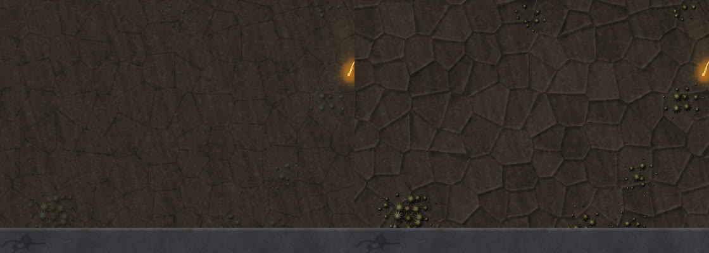
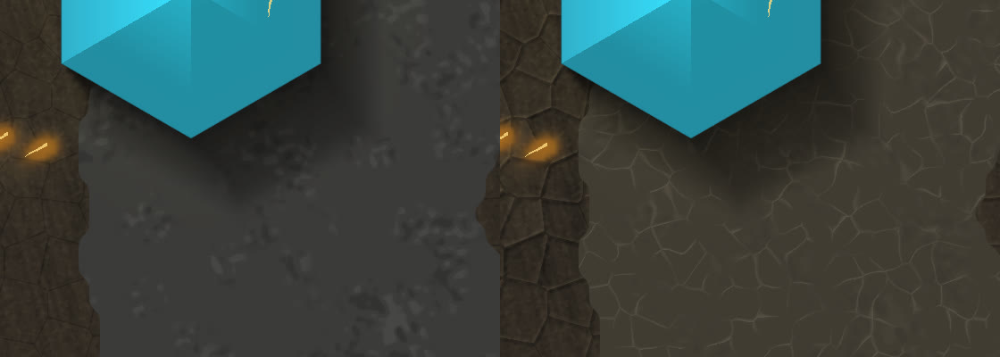
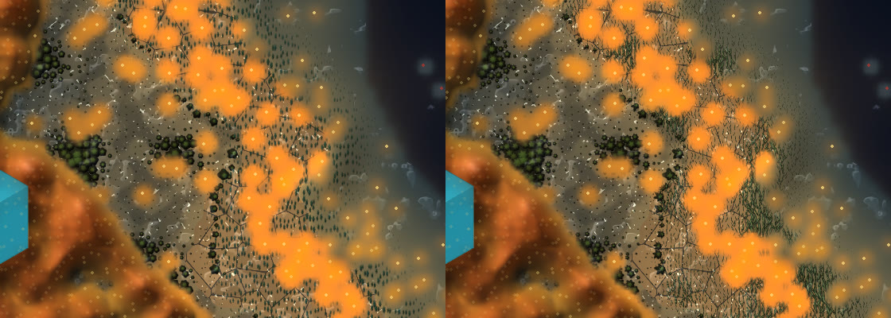
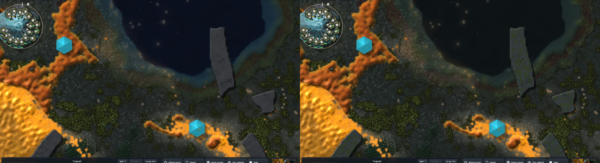
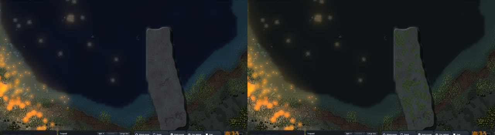
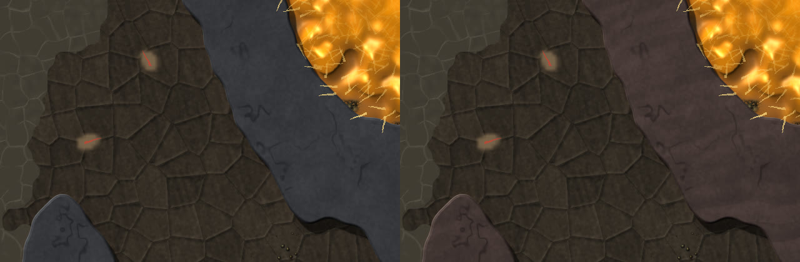

<title>Barrens and Fen Ground</title>
<meta name="claude:viewport-fit-sides" content="cover">
<link rel="stylesheet" href="https://fonts.googleapis.com/css2?family=Fraunces:opsz,wght@9..144,600&family=Source+Sans+3:wght@400;600&family=JetBrains+Mono:wght@400&display=swap">
<style>
/* Layout: one reading column; planet 2 then planet 3, each a zoom 6 and a zoom 12 clip (before left, after right) and one close still */
:root{
  --bg:#efebe3; --panel:#e2dccf; --fg:#211d17; --muted:#5d564a;
  --accent:#8a5a22; --line:#c9c0ae;
  --display:"Fraunces", Georgia, serif;
  --body:"Source Sans 3", "Segoe UI", system-ui, sans-serif;
  --mono:"JetBrains Mono", ui-monospace, Consolas, monospace;
}
@media (prefers-color-scheme: dark){:root:not([data-theme="light"]){
  --bg:#14120f; --panel:#211d18; --fg:#ebe5da; --muted:#a69d8c;
  --accent:#d6a467; --line:#3a332a; color-scheme:dark}}
:root[data-theme="dark"]{
  --bg:#14120f; --panel:#211d18; --fg:#ebe5da; --muted:#a69d8c;
  --accent:#d6a467; --line:#3a332a; color-scheme:dark}
body{background:var(--bg);color:var(--fg);font:17px/1.55 var(--body);margin:0;
  padding-left:max(16px,env(safe-area-inset-left,0px));padding-right:max(16px,env(safe-area-inset-right,0px));padding-block:28px 64px}
main{max-width:1180px;margin:0 auto;display:flex;flex-direction:column;gap:34px}
h1,h2{font-family:var(--display);font-weight:600;text-wrap:balance;line-height:1.15;margin:0}
h1{font-size:2.2rem}
h2{font-size:1.45rem;border-top:2px solid var(--accent);padding-top:14px}
p{margin:0}
section{display:flex;flex-direction:column;gap:14px}
.lede{color:var(--muted);max-width:760px}
.eyebrow{font:12px/1 var(--mono);letter-spacing:.08em;text-transform:uppercase;color:var(--accent)}
.prose{max-width:760px;display:flex;flex-direction:column;gap:10px}
ul{margin:0;padding-left:1.2em;display:flex;flex-direction:column;gap:6px}
code{font:.86em var(--mono);background:var(--panel);padding:1px 4px;border-radius:3px}
figure{margin:0;display:flex;flex-direction:column;gap:6px;min-width:0}
figure video,figure img{width:100%;height:auto;display:block;border-radius:4px;background:#000}
figcaption{font-size:.92rem;color:var(--muted)}
.ba{display:grid;grid-template-columns:1fr 1fr;font:12px/1 var(--mono);letter-spacing:.06em;text-transform:uppercase;color:var(--muted)}
.ba span:last-child{color:var(--accent)}
table{border-collapse:collapse;font-size:.95rem;font-variant-numeric:tabular-nums}
td,th{border-bottom:1px solid var(--line);padding:6px 14px 6px 0;text-align:left}
.tw{overflow-x:auto}
</style>
<main>
<header style="display:flex;flex-direction:column;gap:10px">
  <p class="eyebrow">Look C · planets 2 and 3 · 2026-11-20</p>
  <h1>Barrens and Fen Ground</h1>
  <p class="lede">The same pass planet 1's meadow had: the ground and plants of the barrens (planet 2) and the fen (planet 3) given their own forms. Every clip is the same game twice, run seed 1, greedy hand, 0:40 to 0:44 at real speed, main's look on the left and this change on the right. Nothing in the game changes, only how it is drawn.</p>
</header>

<section>
  <h2>Planet 2, the barrens</h2>
  <div class="prose">
    <ul>
      <li><b>Mud plates.</b> The hardpan's cracks now bound plates that each have their own shade, with rims that curl up and catch the light. It was one flat brown with lines drawn on it.</li>
      <li><b>Salt pan.</b> The barren bands across the route (where the slime cannot be born) were the grey ash of every planet and read as concrete next to the rock. They are now a pale warm crust with broken salt ridges, at the same value as before, still a step under rock.</li>
      <li><b>Thorn scrub.</b> The bushes were the ground's own value and could not be found at zoom 6. They are now dark dry olive with straw tips that catch the sun, and each casts a shadow away from the light. The oasis grass and palms cast shadows too.</li>
    </ul>
  </div>
  <div class="ba"><span>Before</span><span>After</span></div>
  <figure><video src="p2-6.mp4" poster="p2-6.jpg" controls loop muted playsinline></video>
    <figcaption>Zoom 6 at the squad's crystal (world 340, 250). The salt band is on the left, scrub clumps below the squad.</figcaption></figure>
  <figure><video src="p2-12.mp4" poster="p2-12.jpg" controls loop muted playsinline></video>
    <figcaption>Zoom 12 (world 360, 270): the plates and their rims, scrub at the bottom.</figcaption></figure>
  <figure>
    <figcaption>Still, zoom 12, 0:30: the hardpan and a scrub clump.</figcaption></figure>
  <figure>
    <figcaption>Still, zoom 12, 0:30: a barren band, grey ash before, salt crust after.</figcaption></figure>
</section>

<section>
  <h2>Planet 3, the fen</h2>
  <div class="prose">
    <ul>
      <li><b>Reed beds.</b> The reeds round every pool were small green ovals and read as dots on the shore. They are now standing blades in tussocks, straw green with pale tops, each with its shadow, thickest at the water's edge (the reeds' own density, as before).</li>
      <li><b>Moss cushions.</b> The moss hummocks were smooth dark balls (frogspawn at zoom 12). They now have ruffled edges, a softer dome and a shadow, so they read as cushions sitting on the mud.</li>
    </ul>
  </div>
  <div class="ba"><span>Before</span><span>After</span></div>
  <figure><video src="p3-6.mp4" poster="p3-6.jpg" controls loop muted playsinline></video>
    <figcaption>Zoom 6 at the squad (world 290, 70). At this zoom the reeds are near their far-view blend; the change shows mostly at zoom 8 and up.</figcaption></figure>
  <figure><video src="p3-12.mp4" poster="p3-12.jpg" controls loop muted playsinline></video>
    <figcaption>Zoom 12 by the lake (world 310, 60): the reed bed between the slime and the water.</figcaption></figure>
  <figure>
    <figcaption>Still, zoom 12, 0:30 (world 340, 60): moss clumps on the left, reeds on the right.</figcaption></figure>
</section>

<section>
  <h2>Round 2: water and rock</h2>
  <div class="prose">
    <ul>
      <li><b>Bog water (planet 3).</b> The fen's lakes were the same navy as every planet's water and, with the slime's specks in them, read as a night sky. They are now green-black bog water at the same values, so water still sits a step under the ground.</li>
      <li><b>Reeds at zoom 6.</b> The reed blades were still half blended away at zoom 6; they are spaced a little wider so whole blades show from zoom 6 up.</li>
      <li><b>Sandstone (planet 2).</b> Rock was the same slate on every planet. On the barrens it is now a rose-tan sandstone in beds a few cells thick, each its own shade.</li>
      <li><b>Mossy stone (planet 3).</b> In the fen the rock is a cooler wet stone with moss in patches over its top.</li>
    </ul>
  </div>
  <div class="ba"><span>Round 1</span><span>Round 2</span></div>
  <figure>
    <figcaption>Zoom 6, 1:00 (world 360, 90): a lake and its reed margin.</figcaption></figure>
  <figure>
    <figcaption>Zoom 12, 0:30 (world 393, 70): a rock slab in a lake, the reeds on the shore.</figcaption></figure>
  <figure>
    <figcaption>Zoom 12, 0:30 (world 330, 200): the rock round the slime's basin.</figcaption></figure>
</section>

<section>
  <h2>Cost</h2>
  <div class="prose">
    <p>GPU tail per frame on the software renderer (llvmpipe), median of a 4 s bench at zoom 6, three runs a side taken in turn. Two runs of one build differ by 10 to 20% here, so both are inside the noise. This machine says nothing about the GTX 1070.</p>
  </div>
  <div class="tw"><table>
    <tr><th>Planet</th><th>Main, ms</th><th>This change, ms</th></tr>
    <tr><td>2, barrens (300, 300)</td><td>116, 126, 121</td><td>120, 119, 116</td></tr>
    <tr><td>3, fen (300, 100)</td><td>145, 148, 143, 154, 155, 156</td><td>169, 158, 150, 153, 155, 159</td></tr>
  </table></div>
  <p class="lede">Round 2 against round 1, runs taken in turn: planet 2 129, 127 ms against 134, 126; planet 3 166, 156 against 169, 168 (a first run that overlapped filming dropped). Also inside the noise.</p>
  <p class="lede">Made with <code>LARDER_VIEW_WGSL</code> on one build so both sides play the same game; clips joined by <code>make_clips.py</code> in this folder.</p>
</section>
</main>
